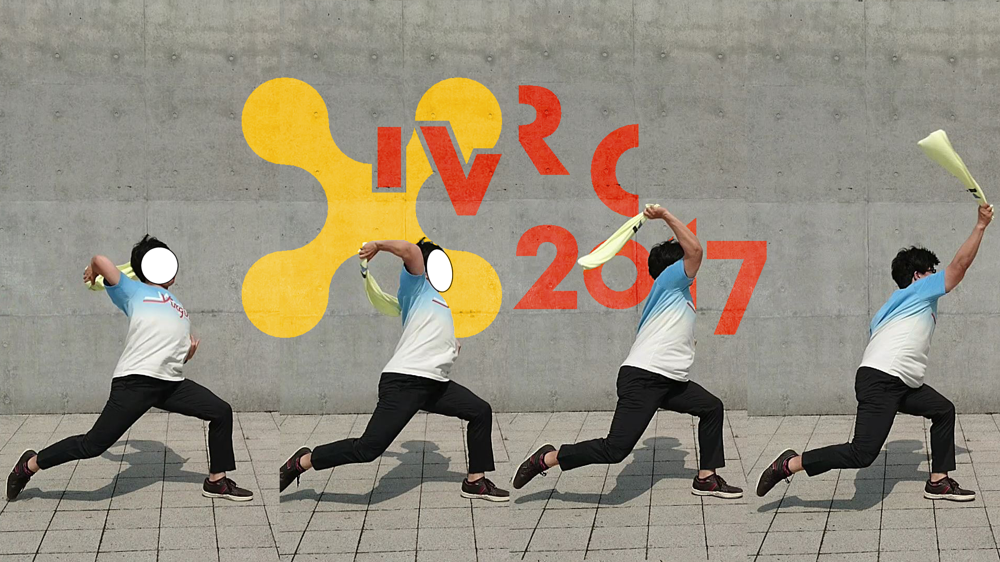
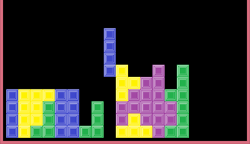
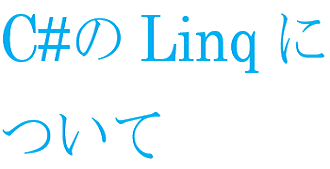

News
-
-
武藏島 雄理 wrote a new post, 6番：バーチャルな非日常inコンテンツ東京②, on the site 白井研セミナー 2年 10か月前
こんにちは。武藏島です。
前回と同じようにコンテンツ東京にある先端コンテンツテクノロジー展のVR・ARワールドの紹介をしていきます。
よろしくお願いします。
●AOI Pro. プロトタイプブース
ここでは、AOI Pro.様による165km/hのストレートを体験する「VR Dream Match™Baseball」とハーネスの必要ない歩行体験ができる「WONDERFUL WORLD」、プロトタイプ様による[…]

-
武藏島 雄理 wrote a new post, 5番：VRの業界は企業からコンテンツまで知らないものだらけinコンテンツ東京①, on the site 白井研セミナー 2年 10か月前
こんにちは。怖いものは「戻る」ボタンが存在しないデバイス作りの武藏島です。
よろしくおねがいします。
今回は6月28日から3日間に渡って開催されたコンテンツ東京に行って参りました。
お目当ては先端コンテンツテクノロジー展のVR・ARワールドです。
早速、紹介をしていきたいところですが…
知っている企業がほとんど無かった…
私は井の中の蛙でした。まさか、出展している企業どころかコンテンツすらまとも[…]
-
石井雄大 wrote a new post, IVRC2017の審査結果＆反省点 #IVRC2017, on the site 白井研セミナー 2年 10か月前
こんにちは
今回は本セミナーで学んだことをもとに企画「デュラハンの頭」について、投稿したIVRC2017の審査結果とその反省点を書いていこうと思います。
まず結果から申しますと不合格でした。
不合格という結果は残念でしたが、自分が思っていたより嬉しかったことや分かったことが多かったです。
IVRCの評価基準である新規性、技術、体験の3つの観点において自分が想定していた審査員の評価は
１．似た作品が多数ある
２．ワイ[…]
-
大西 涼 wrote a new post, 7本目:IVRC2017の結果発表から考える, on the site 白井研セミナー 2年 10か月前
どーも皆さんこんにちは．
今回はIVRC2017の結果とその結果から今後について考えたいと思います．
自分は「超柔道」という企画で投稿しました．内容はHMDと柔道着型デバイスを使って相手と組まずに簡易的に柔道が行える．といったものです．
IVRC2017の結果は不合格でした．
しかし審査員のコメントから自分の作品に何が足りなかったのかを，見ることが出来ました．また企画書の作成や自分の作品をどの様にアピールするかなど，こ[…]

-
武藏島 雄理 wrote a new post, 7番：帰ってきたIVRC-選考と縦スライダーは落ちるけど企画とストレートは伸びて欲しい, on the site 白井研セミナー 2年 10か月前
こんにちは。企画書執筆の追い込み中にジャガイモの皮むきという新体験をした武藏島です。
学生対抗バーチャルリアリティコンテスト（IVRC）に企画書を投稿した結果が帰ってきました。
IVRCに投稿した内容ですが、私の経験を活かした野球VRを企画しました。
野球VRといっても野球の技術向上を目標としたものです。
その名も『インビジブル投手コーチ』
この作品は野球の投球フォームを計測、評価することで投球フォ[…] 
-
-
近藤 優生 wrote a new post, 資格勉強、始めました。, on the site 白井研セミナー 2年 10か月前
こんにちは。近藤です。
梅雨は明けたのか…？と言いたくなるような雨の降らなさ、そして気温の高さですがなんとか生きています。
さて、セミナー出席した時に耳に入ったのだけど、セミナー生の中にはVR技術者試験等といった資格を取得しようと勉強してる人がいたようで、VR技術に関する熱意を感じたり(ブログで見たところ合格したようで、おめでとう)。で、流石に焦りを感じたので私も何か資格の勉強でもしようと思い、手始めに「ITパ[…]
-
kai wrote a new post, ポートフォリオって大事, on the site 白井研セミナー 2年 10か月前
どうも、こんにちは。
白井セミナーの鈴木です。前回行われたセミナーではポートフォリオの話が出てきました。
いよいよ３年後期にさしかかり、就活を見据えると大学までに培ってきた自分の技術、創作を他の人に伝えるポートフォリオづくりが大事になってきます。いざ振り返ってみると、僕が創作したものは大きく分けて３つほどありますが、そのうちの１つは紹介動画データを公開せずに動画データを紛失してしまい、２つ目はコンテンツ自体のデータを消し[…]
-
中村 凌雅 wrote a new post, Part12 最終回！？半期の軌跡 （中村凌雅）, on the site 白井研セミナー 2年 10か月前
こんにちは。中村です。
この挨拶も12回目となりますが、私の名前は憶えていただけましたでしょうか？
今までの出来事をブログに書いてきましたが、前期の終了ということでいったん区切りをつけ、歩みを止めて。
振り返っていきたいと思います。
セミナーを履修する前の自分
セミナーで白井研究室に行こうと考えたキッカケ、それは周囲の評判でした。
「白井研究室はブラックだ。」
誰が言ったか、ただの悪評でした。
私は、根拠[…]

-
山本晴貴 wrote a new post, Part9 ARMSトーナメント戦, on the site 白井研セミナー 2年 10か月前
こんにちは。
今回は、セミナーの一環で実施された、ARMSトーナメントについて纏めていきたいと思います。なお、今後のゲーム開発に活かすためにARMS自体のゲームデザインを中心に述べていきたいとおもいます。
Switch本体にについて
プログラマー志望としては、任天堂の最新ゲームハードであるところのSwitchは、早めに触って最新のゲームのシステムや起こしたアクションに対するレスポンスなどを確認しておきたいと思って[…]

-
山本晴貴 wrote a new post, Part8 IVRC企画書投稿, on the site 白井研セミナー 2年 10か月前
こんにちは。7月も中盤に差し掛かり正に夏真っ盛りといった天気になってきました。
さて、IVRCの企画書ですが、企画書の作成自体今回が初めてであったことに加え、相方とコンビを組んで制作にあたったということもありチームで足並みが合わなかったりと、なかなかうまくいかない面も多々ありましたが、無事〆切に間に合わせることが出来ました。
企画内容としては、複数軸にフライホイールを搭載した刀型デバイスによる切断時の感触を提示するという内[…]

-
山本晴貴 wrote a new post, Part7 Unityでオンラインローグライクゲームが作りたい, on the site 白井研セミナー 2年 10か月前
こんにちは。
大学とは1年次、2年次がチュートリアルで、3年次になってからが本番であると、身をもって実感しました。自分の作りたいゲームを作る時間がなかなか取れないなか、溜まりに溜まったフラストレーションが爆発し、無性にオンラインローグライクゲームを創りたくなりました。
ローグライクゲームがつくりたい
むかしむかし、”Rogue”という、ゲーム画面がテキストのみで構成されたダンジョン探索ゲームが発売されてから現在に至る[…]

-
山本晴貴 wrote a new post, Part6 ～SAIで使える小ワザ備忘録～その1, on the site 白井研セミナー 2年 10か月前
こんにちは。
最近セミナーブログのネタに行き詰まってきたので、気分転換がてら、いままで私がちょいちょい手を出してきたジャンルで、いままで培ってきた役に立ちそうな情報を纏めていこうと思います。
栄えある第一回目は、ペイントツールSAIにて色塗りの段階でイラストの質感を、ぱぱっとリッチにできるテクニックを紹介したいと思います。紹介といいつつ、自分用の備忘録目的で書いてる面もあるので、どっかで見たようなテクニックがちらほら散見さ[…]
-
黒澤優輝 wrote a new post, パズルのピースを集める旅 (授業のまとめ), on the site 白井研セミナー 2年 10か月前
こんにちは(・∀・)
今回は大学3年前期の授業として行ってきたセミナーについてまとめます。
セミナーを履修する前の自分について
・ブログなどで情報を発信することに対して抵抗があった。
→実際にやってみるといい勉強になる(特に技術系)ことが分かっ[…] 
-
山本晴貴 wrote a new post, PartFinal セミナーまとめBlog。, on the site 白井研セミナー 2年 10か月前
こんにちは。
セミナーも3年の前期もだんだん最後へと近づいています。まず、セミナーを履修する前の自分、つまりは4月頃の自分なわけですが、当時は現代社会で生きている以上「やりたいこと」と「やらないといけないこと」が必ずしもイコールになるわけでは無いのですから、「やらないといけないこと」を意欲的に行える用になることが、「社会人になる」「大人になる」ってことなんじゃないかなと、なんとなく思っていました。というのも、私自身が「やりた[…]

-
武藏島 雄理 wrote a new post, 4番：IVRCで調べものと書きものと、やっぱり野球が好きだもの_武藏島雄理, on the site 白井研セミナー 2年 10か月前
こんにちは。大学の学科対抗ソフトボール大会は3年間キャプテンをやる武藏島です。
今回は学生対抗国際バーチャルリアリティコンテスト（以下IVRC）に挑戦しました。
私は企画書を投稿することは初めてでした。
VRでどんな体験を通してどんな問題を解決するかですが、
自分で体験してみないことにはどんな問題があるか実感がわかなかったのです。
では、私にはどんな経験があるか…
やっぱり野球じゃないですかね[…]

-
中村 凌雅 wrote a new post, Part11 納涼！地域の夏祭り （中村凌雅）, on the site 白井研セミナー 2年 10か月前
こんにちは。中村です。
7月22日に地域のお祭りに参加してきました。
今回はお祭りの記事です。
参加したお祭りは地域主催のもので、規模は小さいものでした。
店員さんは小～中学生位の子供たちで親御さんに接客の仕方を教わりながら頑張っていました。
お店はワイワイとしており、見ていてとても楽しそうでした。
出店では食べ物が売っていました。
フランクフルト 100円
豚汁 50円
かき氷 50[…]

-
黒澤優輝 wrote a new post, C#のLinqについての解説, on the site 白井研セミナー 2年 10か月前
こんにちは(/・ω・)/
今回もC#のLinqについての解説です。
前回でもメソッドを少し説明しましたが、今回はより範囲を広げてよく使うものと使えるものを書いていきたいと思います。
データの加工
データにフィルター処理をして必要なデータのみを集めたり、データを組み合わせて新しいデータを作ったりすることができます。
サンプルには
int[] numArray = { 1, 2, 3, 4, 5[…] 
-
Rex HSIEH wrote a new post, ロータリー米山奨記念奨学会の活動報告, on the site Rex's Japan Adventure 2年 10か月前
今回のブログは、私が現在所属している奨学金団体「ロータリー米山記念奨学会」の活動を紹介します。ロータリー記念奨学会の奨学生になって、毎月、「ロータリー例会」に1度だけ出席する必要があり、それ以外にも様々なイベントがあります。私は先週末の日曜日に江ノ島クリーニングキャンぺーンへ参加し、また今週の金曜日に初めて「ロータリー例会」を参加しました。
江ノ島クリーニングキャンペーンとは毎年一度、江ノ島の環境保護をするために、ロー […]
- もっと読み込む